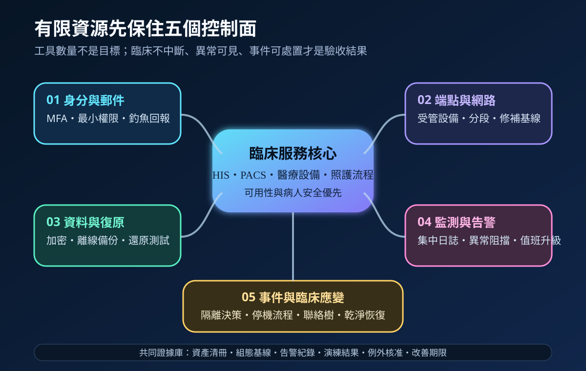
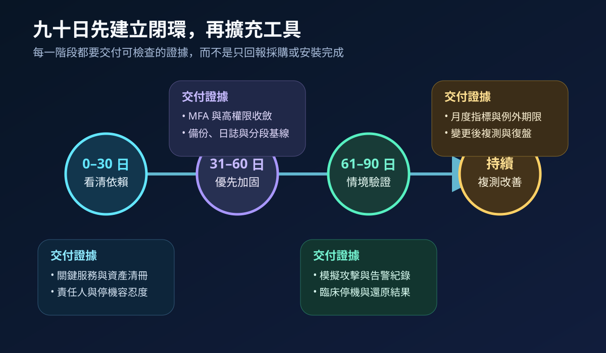
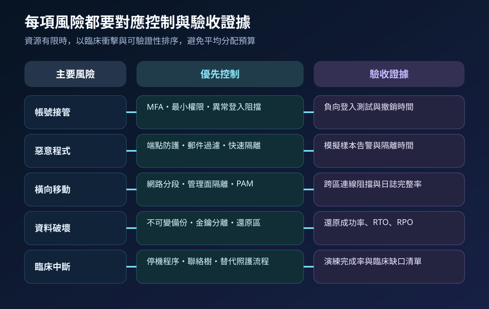

醫療資安國際觀察 · 2026-10-01
小型醫院如何建立可驗證防禦：從異常阻擋到臨床應變
作者：Dr. William｜醫療資訊與資安治理實務工作者
小型醫院不需要複製大型醫學中心的工具清單。有限資源應先集中在可直接降低臨床中斷風險、能持續監測，且能用情境測試證明有效的控制組合。
名詞解釋：最小防禦組合不等於最低規格
可驗證防禦是指控制不只已安裝，還能在異常登入、惡意程式、橫向移動、資料破壞與停機情境中留下阻擋、偵測、處置或復原證據。風險導向排序則依臨床影響、外部曝險、權限強度、資料敏感度及復原難度決定先後，不按部門平均分配預算。
國際現況與適用邊界
美國 HHS OIG 於 2026 年 6 月 12 日公布一項小型醫院稽核，該受查機構在模擬攻擊中展現有效的預防、偵測與回應能力，並以自建機制阻擋異常或可疑活動。這是單一美國醫院的稽核結果，不能推論所有小型醫院都具備相同成熟度，也不是台灣醫療機構的法定控制清單。
HHS 405(d) 的 HICP 2023 版將醫療資安實務區分為適用小型組織與中大型組織的技術卷；NIST CSF 2.0 則提供不限定規模與產業的治理成果分類，但不規定唯一技術作法。台灣醫療機構可採用其風險排序與驗收思路，實際控制仍須配合在地法規、健保與醫療流程、既有架構及病人安全要求。
適用原則：國際資料可用來建立控制目標、證據格式與演練情境；不得把美國稽核結果、HICP 實務或 NIST 框架直接寫成台灣法定義務。
規劃：把資源對準臨床衝擊
範圍先涵蓋電子病歷、影像、檢驗、藥事、掛號、關鍵醫療設備、遠端維護、雲端服務與備份。責任至少包括院級風險核准、資訊與資安執行、臨床停機流程、委外支援及事件通報。驗收指標可採高權限 MFA 覆蓋率、未受管端點數、關鍵日誌覆蓋率、異常告警確認時間、隔離時間、備份還原成功率、RTO／RPO 達成率及逾期例外數。

實作：九十日建立第一個閉環
- 0–30 日：盤點關鍵服務、資產、帳號、外部入口、供應商連線與停機容忍度，指定每項依賴的責任人。
- 31–60 日：優先收斂高權限帳號，部署 MFA、端點防護、網路分段、集中日誌、離線或不可變備份及安全更新基線。
- 61–90 日：執行異常登入、惡意樣本、橫向連線、備份破壞與臨床停機情境，量測告警、隔離、決策與復原時間。
- 持續改善：按月檢視指標與例外；系統、供應商、網路或臨床流程變更後重新測試。
風險：省下平台成本，不能省掉責任與測試
常見失敗包括把所有控制交給單一供應商、只有端點告警卻沒有值班升級、備份與正式環境共用管理權限、測試未納入臨床人員、網路分段沒有負向驗證，以及自建阻擋規則缺乏變更紀錄。工具可精簡，資產責任、例外核准、臨床降級與復原驗收不可省略。

可執行清單
- 是否已列出前十項臨床關鍵服務及其停機容忍度？
- 高權限、遠端維護與雲端帳號是否優先納入 MFA 與定期撤權？
- 端點、身分、網路與備份告警是否有人值班、分級及升級？
- 備份是否與正式管理權限分離，並完成實際還原與資料完整性驗證？
- 分段規則是否以禁止連線與例外路徑進行負向測試？
- 事件演練是否納入臨床停機、人工流程、聯絡樹及恢復後核對？
- 指標、例外、供應商依賴與改善期限是否定期提交院級治理會議？
來源
- HHS OIG｜A Small Southeastern Hospital Had Effective Cybersecurity Controls To Prevent, Detect, and Respond To Cyberattacks（發布：2026-06-12；查閱：2026-10-01）
- HHS 405(d)｜Health Industry Cybersecurity Practices: Managing Threats and Protecting Patients, 2023 Edition（版本：2023；查閱：2026-10-01）
- NIST｜The NIST Cybersecurity Framework (CSF) 2.0（發布：2024-02-26；查閱：2026-10-01）
內容說明
本文依健康台灣深耕計畫相關治理內容整理，並參考 HHS OIG、HHS 405(d) 與 NIST 公開資料，提出小型醫院可採用的風險排序、九十日導入、情境測試與臨床應變框架；不把美國個案、產業實務或國際框架視為台灣法定義務，也不取代主管機關公告、法律意見、院內政策或個案臨床風險評估。